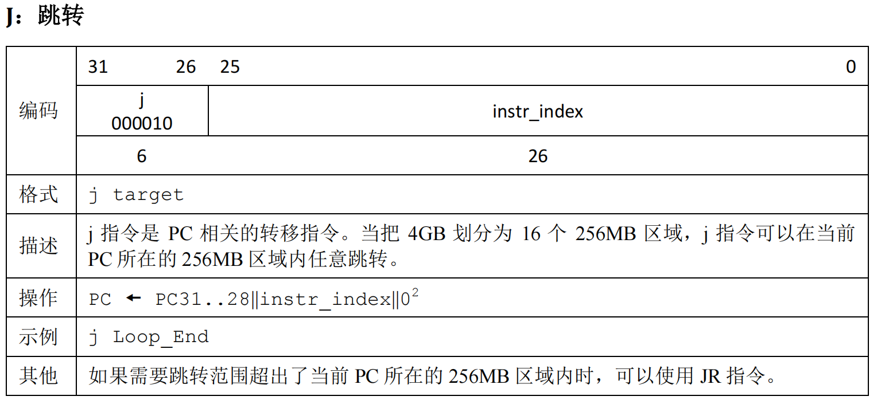
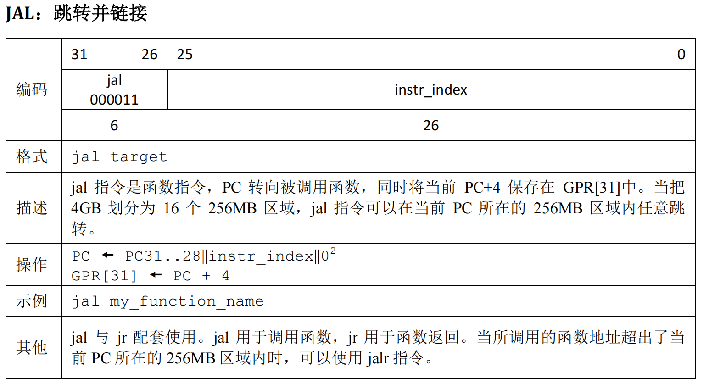

P4-CPU-设计文档
设计要求
- 32位单周期处理器
- 指令集
add(无符号加法，不考虑溢出)
sub(无符号减法，不考虑溢出)

ori
lw

sw
sb
beq
lui
j
jal
jr
nop
- 模块化与层次化设计
- 顶层有效的驱动信号包括且仅包括同步复位信号reset
- clk采用内置时钟模块
模块定义
PC(程序计数器)
- 寄存器实现
- 同步复位功能,复位值为起始地址(0x000030000)
- 地址范围:0x00003000 ~ 0x00006FFF
端口定义
| 信号名 | 方向 | 位宽 | 描述 |
|---|---|---|---|
| CLK | I | 1 | 时钟信号 |
| RST | I | 1 | 同步复位信号 |
| NPC | I | 32 | 输出下一次执行的指令的地址 |
| PC | O | 32 | 当前正在执行指令的地址 |
IM(指令存储器)
- 寄存器组实现
- 容量: 4096 × 32bit
- 内部起始地址为0
- 实际取指:
(PC-0x00003000)[13:2]
端口定义
| 信号名 | 方向 | 位宽 | 描述 |
|---|---|---|---|
| CLK | I | 1 | 时钟信号 |
| RST | I | 1 | 同步复位信号 |
| PC | 1 | 32 | 当前正在执行指令的地址 |
| Instr | O | 32 | 输出当前正在进行的指令 |
NPC(下一指令计算单元)
1. 有关控制信号
我们知道NPC可能会有四种状态:
- 非跳转指令:
PC = PC + 4 - 跳转指令
beq:PC = (PC+4)+(Ext_sign(imm16)<<2) j型跳转指令jalorj:PC = {PC[31:28],imm26,2'b0}jr:PC = GPR[RS]
对于beq:
- 需要1个选择信号判断是
branch类跳转. - 进一步,只有
Rs==Rt时跳转,因此branch = beq && equal.
对于jal和j: - 需要1个选择信号判断是
jump类跳转.
对于jr: - 需要1个选择信号判断是
j类跳转.
2. 端口定义
| 信号名 | 方向 | 位宽 | 描述 |
|---|---|---|---|
| CLK | I | 1 | 时钟信号 |
| PC | I | 32 | 当前指令的ROM地址 |
| imm16 | I | 16 | 16位立即数 |
| imm26 | I | 16 | 26位立即数 |
| Branch | I | 1 | 当前是否是跳转指令 |
| ZERO | I | 1 | 是否达到beq跳转条件 |
| Jump | I | 1 | 是否是j或者jal |
| JR | I | 1 | 是否是jr |
| NPC | O | 32 | 下一条要被执行的指令的ROM地址 |
EXT(位扩展器)
有关控制信号
imm16 -> Ext_OP
- 0 : zero_ext(
ori) - 1 : sign_ext(
lui,lw,sw)
2. 端口定义
将16位立即数扩展到32位.
| 信号名 | 方向 | 位宽 | 描述 |
|---|---|---|---|
| imm16 | I | 16 | 16位立即数 |
| ExtOp | I | 1 | 是否是符号扩展 |
| imm32 | O | 32 | 32位扩展后的立即数 |
GRF(通用寄存器组)
- 32个具有写使能的寄存器
- 有同步复位功能
- 0号寄存器始终为0,其它初始值为0
1. 端口定义
| 信号名 | 方向 | 位宽 | 描述 |
|---|---|---|---|
| CLK | I | 1 | 时钟信号 |
| RST | I | 1 | 同步复位信号 |
| A1 | I | 5 | 地址输入信号，指定32个寄存器中的一个，将其中的数据读出到RD1 |
| A2 | I | 5 | 地址输入信号，指定32个寄存器中的一个，将其中的数据读出到RD2 |
| A3 | I | 5 | 地址输入信号，指定32个寄存器中的一个，将其作为写入目标 |
| WD | I | 32 | 数据输入信号 |
| WE | I | 1 | 写使能信号 |
| RD1 | O | 32 | 输出A1指定的寄存器中的32位数据 |
| RD2 | O | 32 | 输出A2指定的寄存器中的32位数据 |
2. 有关控制信号
- A1 <- Rs
- A2 <- Rt
- A3 <- Reg_Dst(
add,sub),JAL(jal)- Rt(
lw,ori,lui) - RegDst : Rd(
add,sub) - JAL : 31
- Rt(
- WE <- Reg_Write(
add,sub,lw,ori,lui,jal指令时有效) - WD <- MemtoReg(
Lw指令有效),JAL(jal指令有效)- ALU_Result (
add,sub,ori,lui) - MemtoReg: DM_Read_Data(
lw) - JAL: PC+4 (
jal)
- ALU_Result (
ALU(算数逻辑单元)
- 提供 32 位加(
add)、减(sub)、或运算(ori)及大小比较(beq)功能。 - 加减法按无符号处理
1. 端口定义
| 信号名 | 方向 | 位宽 | 描述 |
|---|---|---|---|
| A | I | 32 | 参与ALU运算的第一个值 |
| B | I | 32 | 参与ALU运算的第二个值 |
| ALUOp | I | 2 | ALU功能选择信号 |
| zero | O | 1 | 相等判断信号 |
| Result | O | 32 | 输出ALU运算结果 |
2. 功能定义
| 功能名称 | ALUOp | 功能描述 | |
|---|---|---|---|
| 移位 | 00 | Result = B << 16 | |
| 或 | 01 | Result = A | B |
| 加 | 10 | Result = A + B | |
| 减 | 11 | Result = A - B |
3. 有关控制信号
- A <- RS
- B <- ALU_src
- 0 : Rt(
add,sub,beq) - 1 : imm16(
lui,lw,sw,ori)
- 0 : Rt(
- zero -> 控制信号ZERO(
beq)
DM(数据储存器)
- 寄存器组实现
- 容量为 3072 × 32bit (与IM类似12位取地址)
- 同步复位功能,复位值:0x00000000
- 地址范围:0x00000000 ~ 0x00002FFF
- 起始地址:0x00000000
1. 端口定义
| 信号名 | 方向 | 位宽 | 描述 |
|---|---|---|---|
| Addr | I | 32 | 地址输入信号,指向数据储存器中某个存储单元 |
| WD | I | 32 | 数据输入信号 |
| WE | I | 2 | 写使能信号 |
| RE | I | 1 | 读使能信号 |
| CLK | I | 1 | 时钟信号 |
| RST | I | 1 | 异步复位信号 |
| RD | O | 32 | 输出A指定的存储单元中的32位数据 |
2. 有关控制信号
- RE <- MemtoReg(
lw指令有效) - WE
- 00:不写入
- 01:
Memory[Addr[13:2]]<-GPR[Rt] - 10:
Memory[Addr[13:2]][1+8*Addr[1:0]:Addr[1:0]]<-GPR[Rt][7:0]
Controller
根据上面的控制信号需求,我们整合设计出如下控制信号输出模块.
真值表
| R_format | ori | lui | lw | sw | sb | beq | j | jal | jr | |
|---|---|---|---|---|---|---|---|---|---|---|
| RegDst | 1 | |||||||||
| ALUSrc | 1 | 1 | 1 | 1 | 1 | |||||
| MemtoReg | 1 | |||||||||
| RegWrite | 1 | 1 | 1 | 1 | 1 | |||||
| MemWrite<1:0> | 01 | 10 | ||||||||
| Branch | 1 | |||||||||
| Jump | 1 | 1 | ||||||||
| JR | 1 | |||||||||
| JAL | 1 | |||||||||
| ExtOp | 1 | 1 | 1 | |||||||
| ALUop<1:0> | OR | SHIFT | ADD | ADD | ADD | SUB |
测试方案
我这次没有选择自动生成指令的工具,而是自行构造数据.
然后继续使用上次的python脚本将输出结果与Mars的运行结果进行比较,并输出比较结果.
我着重加强了对就j,jr,jal的测试.
同时由于测试时发现bug主要出现在与beq指令有关的地方,因此又着重测试了这个指令.
思考题
阅读下面给出的 DM 的输入示例中（示例 DM 容量为 4KB，即 32bit × 1024字），根据你的理解回答，这个 addr 信号又是从哪里来的？地址信号 addr 位数为什么是 [11:2] 而不是 [9:0] ？

addr信号从ALU来,且有Result = GRF[base]+sign_ext(offset),取ALU计算结果的第2位到第12位作为Addr.- DM的一个数据为32bit,包括4个Byte,
Result[1:0]用来选择字节,Result[12:2]用来选择数据,同时保证了字节的强制对齐.
思考上述两种控制器设计的译码方式，给出代码示例，并尝试对比各方式的优劣。
- 指令对应的控制信号如何取值
1
2
3
4
5
6
7
8
9always @(*)begin
if(ADD == 1)begin
RegWrite = 1;
RegDst = 1;
end
else
…………
end
end - 控制信号每种取值所对应的指令在不考虑溢出的情况下自然没有这个区别,这两对指令就等价了.
1
2
3
4
5
6
7
8
9
10
11
12
13
14
15
16
17
18
19
20assign ALUOp = (ORI) ? 2'b01 :
(LW||SW||ADD||SB) ? 2'b10:
(SUB||BEQ) ? 2'b11 : 2'b00;
```
> 在相应的部件中，复位信号的设计都是同步复位，这与 P3 中的设计要求不同。请对比同步复位与异步复位这两种方式的 reset 信号与 clk 信号优先级的关系。
1. 同步复位:`clk`信号优先.
2. 异步复位:`reset`信号优先.
> C 语言是一种弱类型程序设计语言。C 语言中不对计算结果溢出进行处理，这意味着 C 语言要求程序员必须很清楚计算结果是否会导致溢出。因此，如果仅仅支持 C 语言，MIPS 指令的所有计算指令均可以忽略溢出。 请说明为什么在忽略溢出的前提下，addi 与 addiu 是等价的，add 与 addu 是等价的。提示：阅读《MIPS32® Architecture For Programmers Volume II: The MIPS32® Instruction Set》中相关指令的 Operation 部分。
`addi`与`addiu`,`add`与`addu`的唯一区别在于有溢出时:
```txt
if temp32 ≠ temp31 then
SignalException(IntegerOverflow)
参考图

本博客所有文章除特别声明外，均采用 CC BY-NC-SA 4.0 许可协议。转载请注明来源 PlutoC！